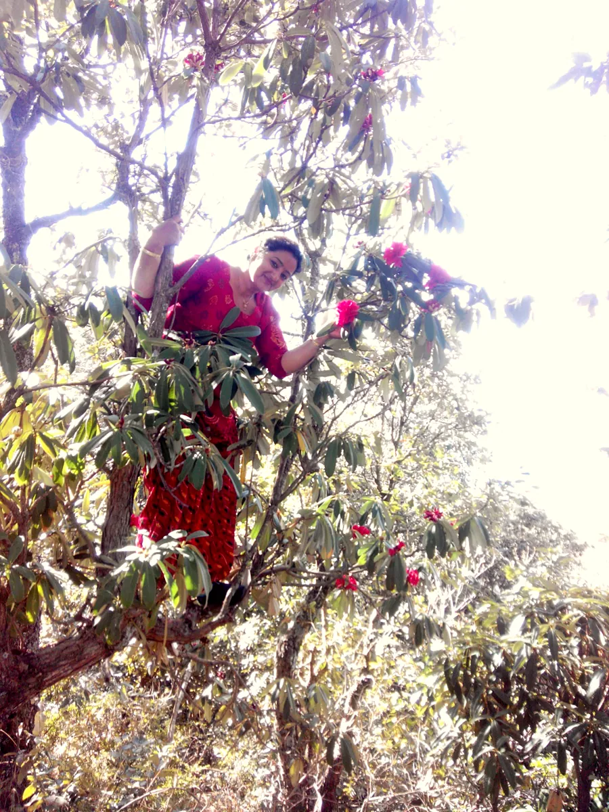
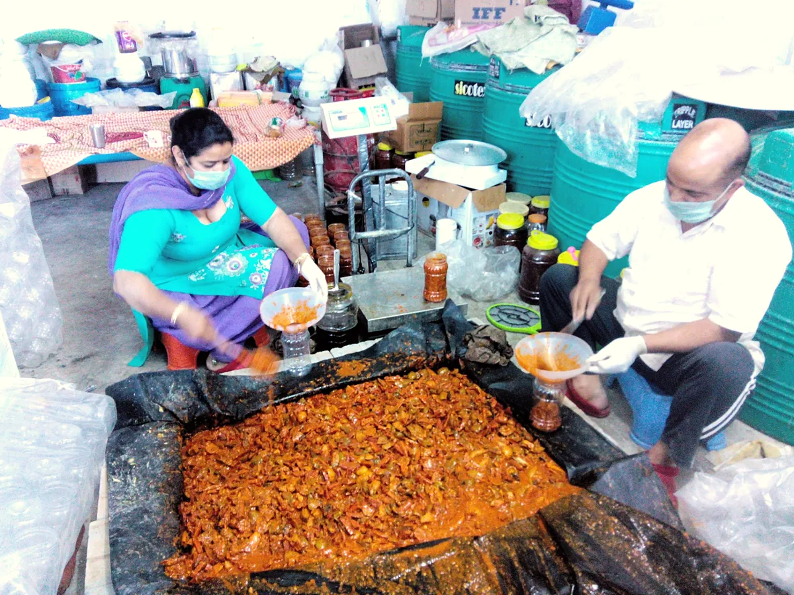
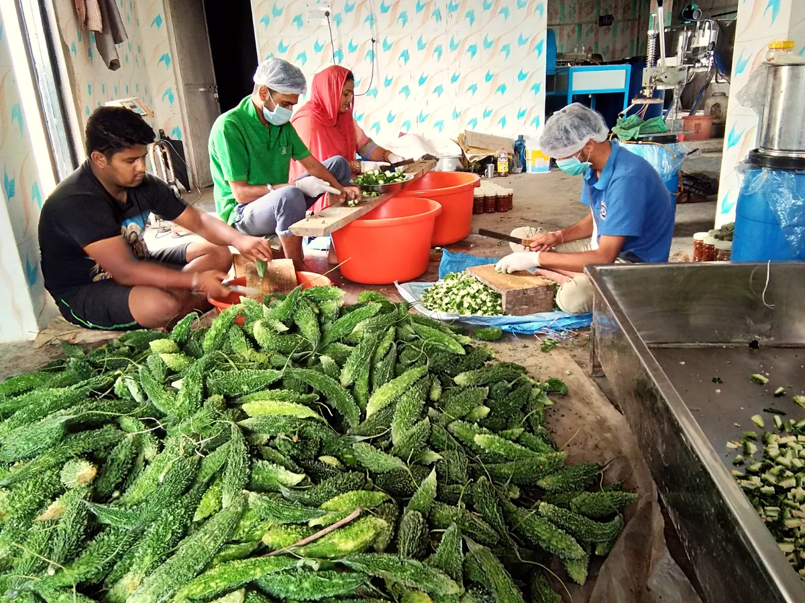
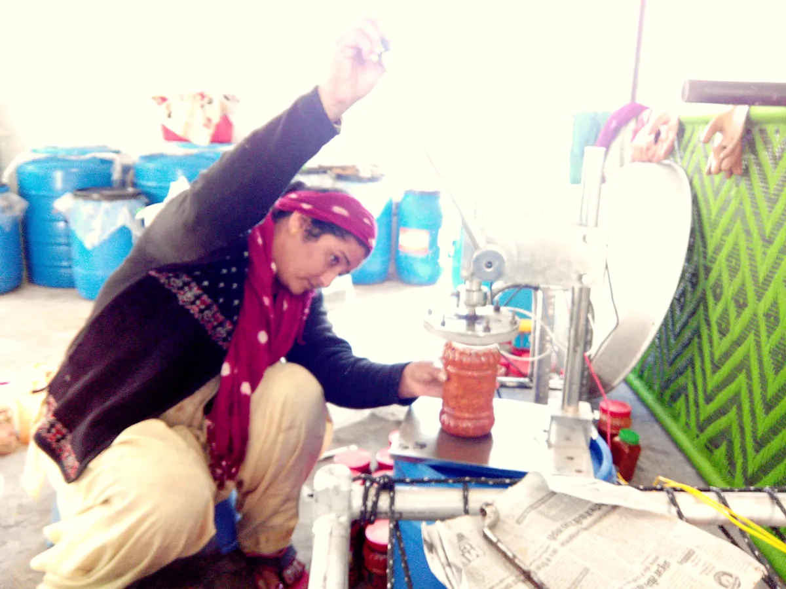
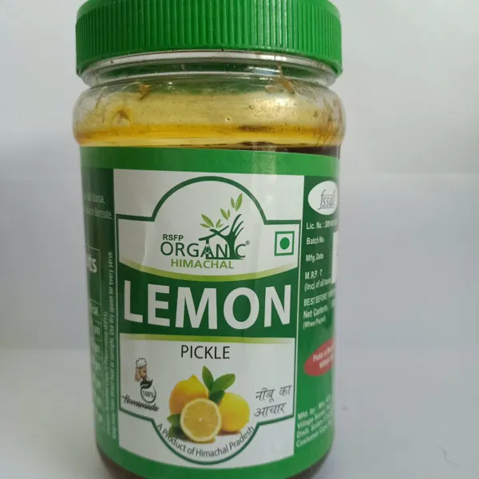
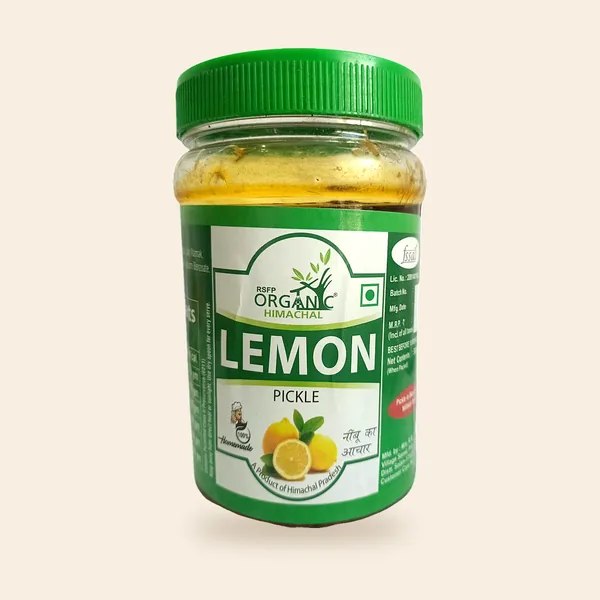

You visit your bua in the hills. Before you leave she wraps two jars in newspaper and won't take no for an answer.
That's the feeling every customer should get from RSFP. We aren't a factory or a "premium gourmet" label. We're the relative in the pahad whose pickles you grew up on, the one you're proud of and quietly want to see do well.
When people buy from us, they should feel they're helping someone they know: Neelam ji and the women of Sanet who cut, sun-dry and fill every jar by hand.
If a design, photo or sentence would feel strange coming from a loving aunt, it's off-brand.
अपनापन
Apnapan · belonging
Talk to people like family. Use first names, "aap", small personal details. Nobody is a "customer segment".
गरमाहट
Garmahat · warmth
Sunlight, turmeric, mustard oil, steel vessels, wood. Warm colours, real daylight, generous spacing, nothing cold or glossy.
ईमानदारी
Imaandari · honesty
Real photos of real people. Real prices in rupees. Say what's in the jar and stop there. No miracle health promises.
पहाड़ी
Pahadi · of the hills
Galgal, lingad, lasoda, buransh, chukh. Our ingredients are the story. Name them proudly and explain them simply.
Personality
Who we are, and who we aren't
We are
We are not
Homely and generous
Luxurious or "gourmet"
Proud of Himachal
Generic "Indian pickles"
Hand-made, a little imperfect
Industrial, uniform, glossy
Plain-spoken, a bit playful
Salesy, shouty, discount-driven
Women-led, local, seasonal
Faceless corporate
Honest about food
Medicine, cures, health claims
Our story
Started as one woman's dream. Made by many hands.
RS Food Products was started by Neelam Verma to share the pickles and sharbats of Himachal with homes beyond the hills. Along the way it became something bigger: a way for local women in Sanet to learn, earn and stand on their own feet.
Everything is seasonal and made in small batches. Buransh flowers are picked off the trees in spring, lasoda only lasts a few weeks of early summer, lingad is foraged in the monsoon. When it's gone, it's gone until next year.

Climbing for buransh

Masala mixed by hand

Sorting pahadi karela

Filling sharbat, one bottle at a time
These four photos are the most valuable brand assets we have. Use them before any stock or AI image.
Voice and tone
Write like a letter from family
Short sentences. Warm, specific, a little funny. Mix in Hindi words the way people actually speak (achaar, pahad, nimbu-paani), and explain unusual ingredients in one line.
Talk about people and seasons, not "processes".
Say how to eat it: with what, at which meal.
Prices in ₹, always, with weight or volume.
Never claim it cures, treats or controls anything. Say it's tasty, traditional and made with care.
"Galgal season is here! We've just put this year's batch out in the sun. It'll be tangy enough to make you squint, just like you remember. Order early, it never lasts past March."
— Neelam
Website words
Where
Instead of
Say
Main order button
Add to Cart
Add to basket
Contact button
Enquiry Now
Ask Neelam ji on WhatsApp
Empty basket
Your cart is empty
Your basket's empty. The galgal is lonely.
Order placed
Order #1043 confirmed
Thank you! We'll pack your jars this week. Order #1043
Out of stock
Out of stock
Season's over. Back next spring. Tell me when
Product benefits
Regulates blood sugar
Bitter, spicy and very pahadi. Great with dal-chawal.
Form error
Invalid input
That phone number looks short. Please check it's 10 digits.
Logo
Keep the logo we have, give it room
The RSFP Organic Himachal mark (the hand and leaves growing out of a pahadi home) already says "made by hand, in the hills". Keep it. Use it on khadi paper or white. On green, put it inside a paper-coloured pill, never reversed out.
Primary: on khadi paper
On white (labels, packaging)
On lid green: inside a paper pill
Don't stretch, rotate or recolour it.
Don't put it straight on photos.
Keep clear space equal to the height of the "O" in ORGANIC.
Minimum size: 96px wide on screen, 25mm in print.
We only have the logo as a small 447px JPEG. Please ask the designer for the original vector file (AI, SVG or PDF) before we build the site.
Colour
Colours from the jar and the kitchen
Lid green comes straight from the logo and the jar caps customers already recognise. The rest are the colours of a pickle-making day: haldi, laal mirch, khadi cloth and walnut wood.
Lid green#0C612D Logo, headings, main buttons
Leaf#81AB49 Accents, tags, illustrations
Haldi#E3A21A Highlights, seasonal badges
Laal mirch#B5321F Small labels, sale, spice level
Khadi paper#FBF6EA Page background
Walnut ink#2A2117 Body text
Rough proportions: mostly paper, a strong green, a little turmeric, a pinch of chilli.
Typography
Three hands
All three fonts are free on Google Fonts and support both English and Hindi, so the site can switch languages without changing its look.
Rozha OneHeadings, product names
Pahadi Galgal · पहाड़ी गलगल
MuktaBody text, buttons, prices
Sun-dried and slowly aged with pure spices. Lemon Pickle, ₹155. धूप में सुखाया, हाथ से बनाया।
KalamPersonal notes only, sparingly
Packed with love in Sanet ✿
Photography
Real hands, real jars, real daylight
Every product now has a clean studio photo made from the brand-asset pictures: background removed, colour warmed and balanced, jar centred on khadi paper with a soft shadow. Use these on product cards and in the catalog.
The current website mostly uses AI-generated "lifestyle" images. They look nice but slightly fake, and two of them even show the wrong address. Use them only as temporary banners until real photos are taken.

Before: phone photo

After: studio standard
Shot list for the next photo day
Neelam ji in her own kitchen or workspace (replace the AI founder portraits)
Each team member with the pickle they're best at, with first names
Close-ups of hands: cutting galgal, mixing masala, tying the lid
Jars drying in the sun on a rooftop or verandah
Each pickle opened, with a spoonful on a steel plate next to roti or rice
Sharbat poured into a steel glass, with the bottle beside it
The Sanet hills and village, early morning
Packing an order: newspaper, twine, handwritten note
Mixed pickle and lemon squash jars (no real photo yet)
A short phone video for each season (buransh, lasoda, lingad)
Shoot near a window, no flash, on wood, steel or khadi cloth. Slightly messy is good. Phone cameras are fine.
Brand elements
Little things that make it feel like family
The batch card
Galgal Pickle
Made by
Neelam & team
Batch
Winter 2026
Note
Extra tangy this year!
Show who made each batch on the product page and on a small card in every parcel. It makes the "help someone you know" feeling real.
The mountain line
A single hand-drawn ridge line in lid green. Use it to divide sections, under headings or along the footer. One weight, never filled in.
Fully rounded, like a jar lid. Green for the main action. WhatsApp is always one tap away.
For the new website
How the brand turns into the site
Two ways to order. A simple basket and checkout, plus "Order on WhatsApp" on every product, prefilled with the product name.
Contact everywhere. Phone and WhatsApp number in the header on mobile, footer on every page.
Seasonal shelf. A "What's in season" row on the home page, driven by the catalog.
Meet the makers. A real people page, linked from every product.
Hindi and English. Product names in both, with a language switch.
Trust, quietly. FSSAI licence number in the footer and on product pages. Only show badges (ISO, HACCP, GMP) that are actually certified.
Phone first. Most customers will arrive from WhatsApp or Instagram on a phone.
Fast. Use the web-sized images in the Product Images folder, not the originals.
Found on the current site
Things to fix or confirm
Placeholder contact details. Contact page and footer show "123 Main Street, New York", "contact@mysite.com" and "123-456-7890". Social links all go nowhere. urgent
Prices show in dollars. Shop shows "$250.00". These look like rupee amounts with the wrong currency set in WooCommerce. urgent
Conflicting addresses on posters. The Orange Squash poster says Sanet, Mamligh, District Solan. The Rose Squash poster says "Pali, Rajasthan" and the Mixed Pickle poster says "Dalhousie, Chamba" with a different phone and FSSAI number. These look like AI mistakes. Please confirm the one true address.
FSSAI number. The website badge says 10018022008334; the jar labels show a different number. Please confirm which is current.
Certification badges. The site shows ISO 9001, HACCP and GMP badges. Only keep the ones with a certificate we can show.
Health claims. Several product descriptions promise blood sugar control, immunity and more. FSSAI advertising rules don't allow this without approval. Rewrite them as taste and tradition.
Leftover template content. The media library still holds interior-design, ceramics and training-course demo images, a "Service 1/3/4" field on the contact form, and stock testimonial photos.
Missing products and photos. Mango, Green Chilli, Kathal, Buransh sharbat, Mixed Fruit Jam and Petha have photos but aren't on the site. Pahadi Karela has no price. Mixed Pickle and Lemon Squash have no real photo.
Names vary. Lasoda / Lasuda / Lasode, Green Chuk / Chukh, Brahmi squash / sharbat. The catalog uses one spelling for each.